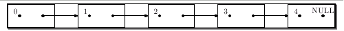
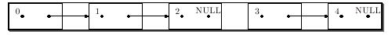
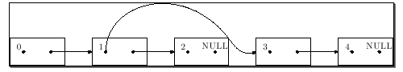
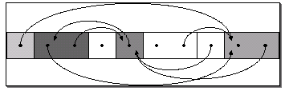

Ce premier article de la série que j'envisage d'écrire vous propose de découvrir le recyclage automatique (garbage collection), une approche de gestion de la mémoire que vous avez sans doute déjà utilisée, peut-être sans vous en rendre compte, à travers des langages de haut niveau tels que Lisp, Java ou encore PHP.
Je tiens à remercier bluestorm pour l'adaptation du code LaTeX d'origine en zCode et l'amélioration du script MetaPost ayant servi à la création de la quatrième figure.
Un programme manipule, produit et stocke un nombre considérable de données durant son exécution. Nous pouvons classifier celles-ci selon leur durée de vie, c'est-à-dire l'intervalle de temps pendant lequel elles sont nécessaires au programme. Il existe ainsi plusieurs types de durées de vie. Certains objets vivent et meurent avec le programme qui les emploie ; leur existence est toujours requise par le programme.
Nous serions bien à notre aise si nous pouvions nous contenter de cette première catégorie. Nous pourrions alors créer des objets sans jamais nous soucier de remplir la mémoire de notre ordinateur. Malheureusement, la mémoire est physiquement limitée et il arrive un moment où il nous faut recycler les objets devenus inutiles pour leur attribuer de nouvelles informations.
Plusieurs approches existent. Beaucoup de langages, par exemple, proposent un concept apparenté aux variables automatiques (souvent appelées variables locales) du C, dont l'existence est régie par un bloc. Le principe est alors de structurer le programme : de placer des contraintes sur la durée de vie de certains objets ; dans notre exemple, il s'agit d'entourer les déclarations de variables concernées avec un bloc, visuellement, des accolades. Une autre perspective consiste à pourvoir le codeur d'outils lui permettant de contrôler directement la vie et la mort de ses objets ; les langages plus proches de la machine tels que le C proposent de telles constructions (les fonctions malloc, calloc et free, du C en sont un exemple).
Les langages de plus haut niveau adoptent, quant à eux, une vision différente du sujet. De tels langages vous permettent de créer à loisir autant d'objets que possible, sans jamais vous soucier de les détruire un jour. La mémoire vous apparaît alors effectivement illimitée.
En vérité, c'est le système (je ne parle pas forcément ici de votre système d'exploitation, mais du système offert par le langage, souvent appelé implémentation) qui se charge de réclamer de lui-même la mémoire inutilisée. Nous allons présenter, dans ce court article, les grands principes derrière ce mécanisme quelques fois bien pratique.
La technique repose sur le concept d'accessibilité des objets. Un objet est accessible à un moment donné de l'exécution du programme s'il est susceptible d'être encore utilisé par celui-ci. Cela ne signifie aucunement qu'il le sera, simplement qu'il peut l'être.
Idéalement, nous saurions voir l'avenir et distinguer à l'avance l'utile de l'inutile qui pourrait être immédiatement recyclé. Nous nous contentons cependant d'une approximation de ce résultat, qui a l'avantage d'être calculable, en effectuant la démarche inverse : nous ne savons pas quels objets vont être réutilisés, mais pouvons sereinement éliminer les objets inaccessibles.
Le coeur du problème réside donc dans l'évaluation de l'accessibilité des divers objets qui composent les données du programme.
Références et liens entre objets
Les données sont rarement indépendantes les unes des autres, et il arrive fréquemment que les objets soient liés entre eux pour former des structures de données, telles que les listes chaînées. Ils n'en sont pour autant pas moins des objets différents, utilisés ensembles. Toutefois, il est à noter que le lien n'est pas toujours réciproque. Souvent, un objet dépend d'un autre, sans que l'inverse soit vrai. On dit alors que le premier contient une référence au second.
Un objet B est accessible depuis un objet A si A comporte une référence à B. Par extension, si C est accessible depuis B et B est accessible depuis A, alors C est accessible depuis A. Une autre perspective consiste à considérer les références comme des voies d'accès à sens unique reliant deux points ; la succession de plusieurs voies de même sens constitue un chemin. On définit alors l'accessibilité de B depuis A comme l'existence d'un chemin de A à B.
Un exemple : les listes
Le cas le plus simple de structures offrant des perspectives de liens entre les objets est la liste simplement chaînée. Les listes peuvent être définies en termes de noeuds. Chaque noeud contient une valeur et une référence vers la suite de la liste. En C, nous implanterions cela à l'aide d'une structure à deux champs, dont l'un est un pointeur vers une autre structure semblable.
Afin d'illustrer la notion d'accessibilité, étudions trois exemples de disposition possibles de listes en mémoire. Les cadres représentent des objets de type struct noeud et les flèches, les références d'un objet à un autre. Un objet est accessible à partir d'un autre s'il est graphiquement possible d'arriver à sa case représentative, depuis le départ voulu, en suivant les flèches.

Ci-dessus, une liste fictive présentant cinq éléments numérotés de 0 à 4. Le 0 donne accès à tous les autres éléments, mais le 2 ne permet d'accéder qu'aux valeurs qui le suivent : 3 et 4.

Ici, de même, cinq éléments sont présents, mais ils forment, cette fois, deux listes plutôt qu'une. Le diagramme montre clairement qu'il n'existe aucun chemin menant d'un élément de la première (prenons le 1) à un élément de la seconde (prenons le 3).

Notre dernier exemple présente un cas particulier, où la valeur d'une cellule peut elle-même être un pointeur sur une liste. Ainsi, nous pouvons former des listes de listes. Dans ce cas précis, le 1 donne accès au 2, comme précédemment, mais également au 3 ainsi qu'au 4 qui le suit.
Application au recyclage
Grâce à la relation précédente, nous sommes capables de déterminer, étant donné un objet A, l'ensemble des objets accessibles depuis A. Nous pouvons ensuite en déduire l'ensemble des objets inaccessibles par différence (tout objet absent de l'ensemble des objets accessibles est inaccessible). Nous allons maintenant tenter d'appliquer ceci à notre problème initial.
Sans plus d'informations, les notions d'accessibilité ne nous sont d'aucune aide, puisqu'elles permettent seulement d'affirmer une dépendance entre deux objets. Il est nécessaire, afin d'en faire usage, de posséder des informations sur au moins un objet.
De plus, une propriété essentielle de tout programme de recyclage est que la valeur d'un objet actuellement ou potentiellement en usage n'est pas affectée par le processus de récupération. De ce fait, il nous faut non seulement fournir des informations sur les objets connus, mais il est également nécessaire que ces informations soient complètes, c'est-à-dire qu'elles permettent de déduire tous les objets accessibles par le programme. L'ensemble de ces objets connus suffisants est appelé ensemble des racines (et chaque membre est une racine).
Il n'existe pas de règle universelle pour le choix de cet ensemble, celui-ci dépend tout entier de la manière dont le langage visé est implanté. Il est possible, par exemple, d'utiliser un jeu plus ou moins riche de racines.
Point technique (facultatif)
Le jeu de racines minimal peut, toutefois, dans la grande majorité des langages, être assimilé à un objet contenant un nombre limité et prédéfini de références. Ce modèle repose sur l'observation intuitive que tout code qui n'est pas modifié durant l'exécution du programme n'a accès qu'aux informations disponibles lors de la compilation ou du chargement. Ceci étant, tout accès qu'il contient devra passer par un objet globalement connu de tous les acteurs contribuant au bon déroulement des opérations (compilation, chargement, exécution, etc.).
La plupart des langages à base de procédures peuvent décrire leur ensemble de racines comme étant la réunion des objets globalement visibles et des objets présents sur la pile d'exécution. Toutefois, il est tout à fait possible de considérer que la pile n'est elle-même qu'une structure de données dont la tête est référencée par une entité globale.
Les outils développés dans la section précédente permettent d'établir les ensembles d'objets accessibles et inaccessibles. Cette information est à la base de tout programme de recyclage. Une fois celle-ci acquise, nous pouvons effectuer diverses opérations sur les données, maintenant classées, selon qu'elles sont utiles ou inutiles. Les données devenues inutiles sont typiquement mises en réserve en attente d'une prochaine demande de mémoire. Les données désignées comme potentiellement nécessaires sont conservées.
Il apparaît ainsi que le travail peut être scindé en deux phases : une phase d'analyse, servant à déterminer l'accessibilité de chaque objet et une phase de nettoyage, chargée de libérer la mémoire marquée par l'analyse comme récupérable. C'est le principe du recyclage mark & sweep que nous allons brièvement étudier dans cette section. C'est l'une des méthodes les plus basiques de collecte de la mémoire.
L'algorithme que nous allons aborder est très naïf et il existe maintes façons de l'améliorer (façons qui, je l'espère, trouveront leur place dans un article futur ;) ). Il possède cependant l'avantage incontestable de la simplicité.
Principe de l'analyse
L'analyse consiste à parcourir, depuis l'ensemble des racines, tous les objets accessibles. C'est un processus servant à déterminer l'ensemble des objets accessibles.
Au départ, aucune information n'est connue sur quelque objet que ce soit. Tous les objets atteints par l'analyse sont considérés comme accessibles par le programme. On dit que chaque objet atteint est marqué par l'analyse, d'où le nom de l'algorithme.
Lorsque l'analyse découvre un nouvel objet, deux cas se présentent :
si l'objet n'a pas été marqué, il est marqué ;
si l'objet a déjà été marqué, nous sommes revenus sur nos pas, et le marquage s'arrête, pour ce chemin.
L'analyse procède ensuite récursivement en examinant tous les objets associés aux références contenues dans l'objet en cours. Elle traverse ainsi tous les objets accessibles, par plusieurs chemins. Un chemin se termine si l'objet analysé ne contient aucune référence, ou s'il a déjà été marqué. L'image suivante présente ce processus récursif à l'aide de couleurs.

Les blocs contigus représentent des objets et les flèches, des références. L'unique racine est prise comme étant le premier élément.
Les différents tons de gris marquent la progression du collecteur à travers les objets ; la nuance indique la profondeur du parcours, c'est-à-dire la distance, en termes de liens suivis, entre la racine et l'élément coloré.
Les blocs demeurés blancs n'ont pas été atteints par l'analyse et peuvent donc être réclamés.
Point technique (facultatif)
En pratique, il existe de diverses façons d'implanter l'information d'appartenance au premier ou au second ensemble. Une solution simple (mais contraignante, dans une certaine mesure) est d'utiliser des listes doubles, reliant les objets d'un même ensemble entre eux. Chaque passage sur un objet modifierait les listes de manière appropriée.
D'autres stratégies, telles que l'utilisation d'un tableau de bits, ou le placement d'un bit d'état au début de chaque objet, sont également envisageables, pour peu qu'il soit possible de parcourir intégralement la mémoire de manière linéaire. Cette gestion fine de la mémoire est disponible sur beaucoup de systèmes d'exploitation, et peut être simulée (non sans peine) en C normal.
Principe du nettoyage
La phase de nettoyage est, en règle générale, triviale. Il suffirait, dans le plus simple des cas, de parcourir l'ensemble des éléments qui n'ont pas été marqués (restés blancs dans l'exemple de la figure) et de leur appliquer l'opération de libération de la mémoire (par exemple, free).
Le point clé affectant la phase de nettoyage réside dans le choix de la représentation des ensembles blanc et marqué, déjà discuté.
Caractéristiques de l'algorithme
L'algorithme que nous avons étudié présente les caractéristiques suivantes :
il est capable de collecter tous types de structures, y compris les structures formant des cycles ;
il parcourt l'intégralité des objets utiles, et nécessite l'accès à l'ensemble de tous les objets pour opérer ;
il effectue son travail en un seul passage constitué de deux phases ;
il peut engendrer une fragmentation importante de la mémoire.
Ces propriétés ne sont pas partagées par tous les algorithmes de recyclage. Les deux premiers contrastent avec le comptage de référence. La continuité du travail est le souci des algorithmes par incréments, et de collecte partielle. La fragmentation est mitigée par les algorithmes de copie et de compactage de la mémoire.
Le problème de la fragmentation survient du fait de la continuité de la mémoire. Réclamer des blocs de mémoire crée des zones inoccupées entre les objets occupés. Dans l'exemple du mark&sweep, les cellules restées blanches deviendront libres lors du nettoyage. Deux inconvénients se trouvent liés à cette fragmentation :
la création de petits espaces contigus libres ne permet pas l'allocation de larges blocs ;
les objets utiles sont dispersés dans la mémoire, ce qui nuit à la localité spatiale.
Ces mêmes désagréments accompagnent l'usage de routines d'allocation manuelle. Cependant, un programme utilisant ces dernières aura tendance à n'exploiter la mémoire dynamique qu'en cas de nécessité. En revanche, selon le niveau d'optimisation offerte par le compilateur du langage visé, il se peut que cette mémoire soit bien davantage sollicitée, dans le cas d'un environnement à gestion automatique de la mémoire, et ce, même pour des objets à courte durée de vie.
Dans cet article, nous avons posé les fondements du problème de la collecte de la mémoire, et exposé les premiers outils permettant d'automatiser cette tâche. L'algorithme expliqué est naïf, mais quelques légères variations en feraient déjà un choix parfaitement viable pour certains environnements relativement réduits et fermés. Bien que nous n'en ayons donné aucune implantation, l'écriture devrait être triviale, et peut constituer un bon exercice pour le lecteur, s'il désire acquérir quelques compétences pratiques complémentaires.
Le second article, portant sur le recyclage progressif (incremental), est maintenant disponible sur le Site du Zéro ; je vous invite donc à le lire si vous souhaitez découvrir une des techniques plus avancées de gestion de la mémoire automatique.